6 Convolutional Neural Networks
Convolutional Neural Networks, or convnets, are a type of neural net used for grid-type data, like images, timeseries or even text.
They are inspired by the organisation of the visual cortex and mathematically based on a well understood signal processing tool: signal filtering by convolution.
Convnets gained popularity with LeNet-5, a pioneering 7-level convolutional network by LeCun et al. (1998) that was successfully applied on the MNIST dataset. They were also at the heart of Alexnet, AlexNet (Alex Krizhevsky et al., 2012), the network that started the deep learning revolution.
6.1 Convolution Filters
Recall that in dense layers, as in Figure 6.1, every unit in the layer is connected to every unit in the adjacent layers.
When the input is an image (as in the MNIST dataset), each pixel in the input image corresponds to a unit in the input layer. For an input image of dimension width by height pixels and 3 colour channels, the input layer will be a multidimensional array, or tensor, containing width \times height \times 3 input units.
If the next layer is of the same size, then there are up to ({\tt width}\times {\tt height}\times 3)^2 weights to train, which can become very large very quickly.

With a fully connected layer, the spatial structure of the image tensor is not taken advantage of.
It is known, for instance, that pixel values are usually more related to their neighbours than to far away locations. This needs to be taken advantage of.
This is what is done in convolutional neural networks, where the units in the next layer are only connected to their neighbours in the input layer. In this case the neighbourhood is defined as a 5\times 5 window.
Moreover, the weights are shared across all the pixels. That is, the weights in convnets are associated to the relative positions of the neighbours and shared across all pixel locations.
Let us see how they are defined. Denote the units of a layer as u_{i,j,k,n}, where n refers to the layer, i,j to the coordinates of the pixel and k to the channel of consideration.
The logit for that neuron is defined as the result of a convolution filter:
\mathrm{logit}_{i, j, k, n} = w_{0,k,n} + \sum_{a=-h_1}^{h_1}\sum_{b=-h_2}^{h_2}\sum_{c=1}^{h_3} w_{a,b,c,k,n} u_{a+i,b+j,c,n-1}
where h_1 and h_2 correspond to half of the dimensions of the neighbourhood window and h_3 is the number of channels of the input image for that layer. (Some may have noted that this is in fact not the formula for convolution but instead the formula for cross-correlation. Since convolution is just a cross-correlation with a mirrored mask, most neural networks platforms simply implement the cross-correlation so as to avoid the extra mirroring step. Both formulas are totally equivalent in practice).
After activation f, the output of the neuron is simply:
u_{i, j, k, n} = f\left( \mathrm{logit}_{i,j,k,n} \right)
Consider the case of a grayscale image (1 channel) where the convolution is defined as:
\mathrm{logit}_{i, j, n} = u_{i+1,j,n-1} + u_{i-1,j,n-1} + u_{i,j+1,n-1} + u_{i,j-1,n-1} - 4 u_{i,j,n-1}
The weights can be arranged as a weight mask (also called kernel) that is applied at each pixel location (see Figure 6.6).
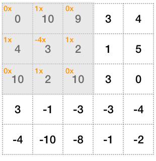

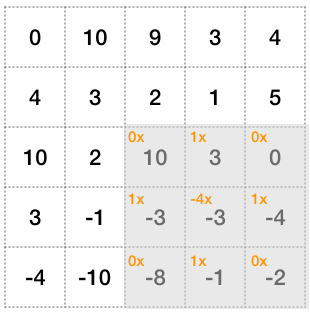
Note that convolution is a fundamental consequence of working on grid-type data. Indeed, as may have already been seen in a signal processing module, convolution naturally arises when trying to design operations on signals that follow the constraints of linearity and shift-invariance.
Linearity means that a x(i,j) + b x(i,j) \rightarrow a y(i,j) + b y(i,j). Linearity is something already present with the neurons thanks to the linear combination of the inputs. Shift invariance (or time-invariance for time series) means that x(i-a, j-b) \rightarrow y(i-a, j-b), which is also a very reasonable assumption. One would expect indeed that shifting the input tensor to the left has the only effect of shifting the output tensor to the left.
In this case, the response y of the system to an arbitrary input x can be found directly using convolution: y = x * h, where h is the system’s impulse response defined by the kernel mask. This makes convolution ineluctable in neural networks that have this kind of grid structure.
Note also that the examples given here are for 2D images, but it is also possible to do convolution for 1D data (eg. time series or text processing), and ND data (eg. fluid simulation, 3D reconstruction, etc.).
6.2 Padding
At the picture boundaries, not all neighbours are defined (see Figure 6.5) and padding strategy must be implemented to specify what to do for these pixels at the edge.

?) should be treated.
In Keras two padding strategies are possible:
padding='same' means that the values outside of image domain are extrapolated to zero.
padding='valid' means that the pixels that need neighbours outside of the image domain are not computed. This means that the picture is slightly cropped.
Input layer. Pixels outside the image domain are marked with '?'. After {\tt 3}\times{\tt 3} convolution. Boundary pixels require out of domain neighbours.
Each convolutional layer defines a number of convolution filters and the output of a layer is thus a new image, where each channel is the result of a convolution filter followed by activation.
Example
Next is a colour picture with a tensor of size {\tt 443}\times {\tt
592}\times {\tt 3} (width={\tt 443}, height={\tt 592}, number of channels={\tt 3}). The convolutional layer used has a kernel of size {\tt 5}\times {\tt 5}, and produces {\tt 6} different filters. The padding strategy is set to valid thus 2 pixels are lost on each side. The output tensor of the convolutional layer is a picture of size {\tt 439}\times {\tt 588}\times {\tt 6}.
In Keras, this would be defined as follows:
x = Input(shape=(443, 592, 3))
x = Conv2D(6, [5, 5], activation='relu',
padding='valid')(x)This convolution layer is defined by {\tt 3}\times {\tt 6}\times {\tt 5}\times {\tt 5} = {\tt 450} weights (to which one needs to add the 6 biases, with 1 for each filter, so 456 parameters in total). This is only a fraction of what would be required in a dense layer.


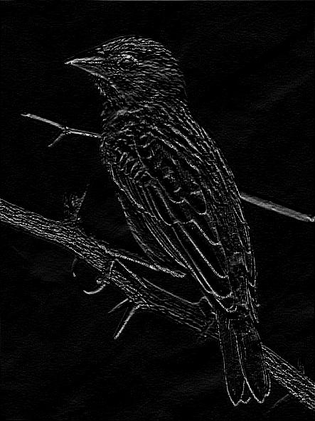

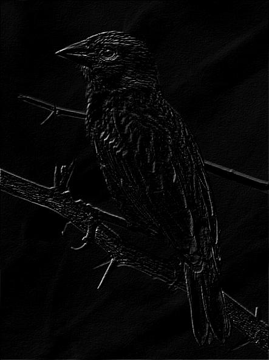
6.3 Reducing the Tensor Size
If convolution filters offer a way of reducing the number of weights in the network, the number of units still remains high.
For instance, applying Conv2D(16, (5,5)) to an input tensor image of size {\tt 2000} \times {\tt 2000} \times {\tt 3} only requires {\tt
5}\times {\tt 5}\times {\tt 3}\times {\tt 16} = {\tt 1200} weights to train, but still produces {\tt 2000} \times {\tt 2000} \times {\tt
16} = {\tt 64} million units.
In this section, it will be seen how stride and pooling can be used to downsample the images and thus reduce the number of units.
6.3.1 Stride
In image processing, the stride is the distance that separates each processed pixel. A stride of 1 means that all pixels are processed and kept. A stride of 2 means that only every second pixel in both x and y directions are kept.
x = Input(shape=(16, 16, 1))
x = Conv2D(1, [3, 3], padding='valid', stride=2)(x)

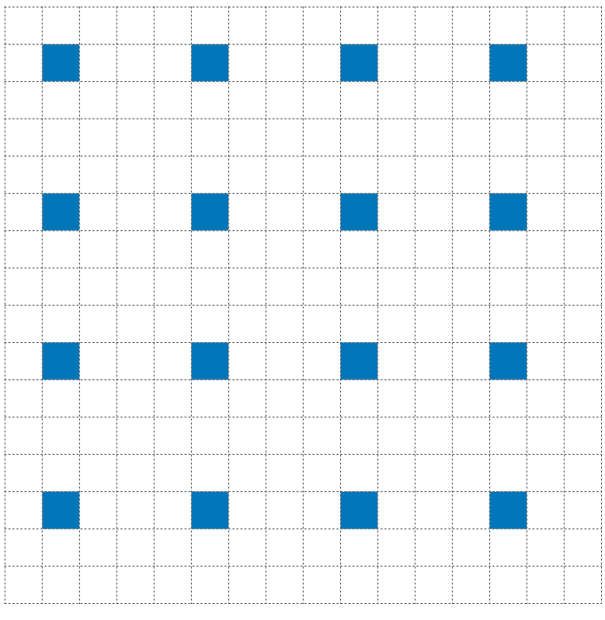
6.3.2 Max Pooling
Whereas stride is set on the convolution layer itself, Pooling is a separate node that is appended after the conv layer. The Pooling layer operates a sub-sampling of the picture.
Different sub-sampling strategies are possible: average pooling, max pooling, stochastic pooling.
MaxPooling2D(pool_size=(2, 2))The maximum of each block is kept.


Example
In the following Keras code:
x = Input(shape=(32, 32, 3))
x = Conv2D(16, [5, 5], activation='relu',
padding='same', strides=1)(x)
x = MaxPooling2D(pool_size=(2, 2))(x)the original image is of size 32\times 32\times 3 and is transformed into a new image of size 32\times 32\times 16. Each of the 16 output image channels are obtained through their own 5\times 5\times 3 convolution filter.
Then maxpooling reduces the image size to 16\times 16\times 16.
6.4 Increasing the Tensor Size
Similarly it is possible to increase the horizontal and vertical dimensions of a tensor using an upsampling operation. This step is sometimes called up-convolution, deconvolution or transposed convolution.
This step is equivalent to first upsampling the tensor by inserting zeros in-between the input samples and then applying a convolution layer. More on this is discussed here.
In Keras:
x = np.random.rand(4, 10, 8, 128)
nfilters = 32; kernel_size = (3,3); stride = (2, 2)
y = Conv2DTranspose(nfilters, kernel_size, stride)(x)
print(y.shape) # (4, 21, 17, 32)Note that deconvolution is a very unfortunate term for this step as this term is already used in signal processing and refers to trying to estimate the input signal/tensor from the output signal. (eg. trying to recover the original image from an blurred image).
6.5 Architecture Design
A typical convnet architecture for classification is based on interleaving convolution layers with pooling layers. Conv layers usually have a small kernel size (eg. 5\times 5 or 3 \times 3). As one goes deeper, the picture becomes smaller in resolution but also contains more channels.
At some point the tensor is so small (eg. 7 \times 7), that it does not make sense to call it a picture. It can then be connected to fully connected layers and terminate by a last softmax layer for classification:

The idea is that the process starts from a few low level features (eg. image edges) and as it goes deeper, it builds more and more features that are increasingly more complex.
Next are presented some of the early landmark convolutional networks.
LeCun, Y., Bottou, L., Bengio, Y., and Haffner, P. (1998). Gradient-based learning applied to document recognition.

Alex Krizhevsky, Ilya Sutskever, Geoffrey E Hinton (2012) Imagenet classification with deep convolutional neural networks.
K. Simonyan, A. Zisserman Very Deep Convolutional Networks for Large-Scale Image Recognition
6.6 Example: VGG16
Below is the code for the network definition of VGG16 in Keras.
# Block 1
x = Conv2D(64, (3, 3), activation='relu', padding='same', name='block1_conv1')(img_input)
x = Conv2D(64, (3, 3), activation='relu', padding='same', name='block1_conv2')(x)
x = MaxPooling2D((2, 2), strides=(2, 2), name='block1_pool')(x)
# Block 2
x = Conv2D(128, (3, 3), activation='relu', padding='same', name='block2_conv1')(x)
x = Conv2D(128, (3, 3), activation='relu', padding='same', name='block2_conv2')(x)
x = MaxPooling2D((2, 2), strides=(2, 2), name='block2_pool')(x)
# Block 3
x = Conv2D(256, (3, 3), activation='relu', padding='same', name='block3_conv1')(x)
x = Conv2D(256, (3, 3), activation='relu', padding='same', name='block3_conv2')(x)
x = Conv2D(256, (3, 3), activation='relu', padding='same', name='block3_conv3')(x)
x = MaxPooling2D((2, 2), strides=(2, 2), name='block3_pool')(x)
# Block 4
x = Conv2D(512, (3, 3), activation='relu', padding='same', name='block4_conv1')(x)
x = Conv2D(512, (3, 3), activation='relu', padding='same', name='block4_conv2')(x)
x = Conv2D(512, (3, 3), activation='relu', padding='same', name='block4_conv3')(x)
x = MaxPooling2D((2, 2), strides=(2, 2), name='block4_pool')(x)
# Block 5
x = Conv2D(512, (3, 3), activation='relu', padding='same', name='block5_conv1')(x)
x = Conv2D(512, (3, 3), activation='relu', padding='same', name='block5_conv2')(x)
x = Conv2D(512, (3, 3), activation='relu', padding='same', name='block5_conv3')(x)
x = MaxPooling2D((2, 2), strides=(2, 2), name='block5_pool')(x)
# Classification block
x = Flatten(name='flatten')(x)
x = Dense(4096, activation='relu', name='fc1')(x)
x = Dense(4096, activation='relu', name='fc2')(x)
x = Dense(classes, activation='softmax', name='predictions')(x)As can be seen the network definition is rather compact. The convolutional layers are laid out in sequence. After block1_pool, the image tensor contains 64 channels but is halved in width and height. As the process goes deeper, the width and height is further halved and the number of channels/features increase. At block5_pool, the tensor width and height is 32 times smaller than the original but the number of channels/features per pixel is 512.
The last dense layers (FC1, FC2) perform the classification task based on the visual features of block5_pool.
Let us take the following input image (tensor size 224\times 224 \times 3, image has been resized to match that dimension):

Below are shown the output of some of the layers of this network.
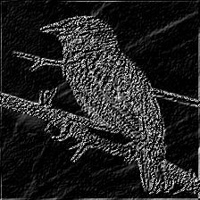
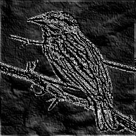
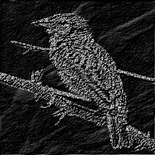


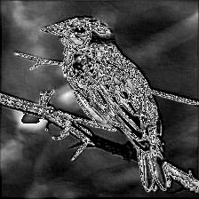
block1_conv2 (size 224 \times 224 \times 64)
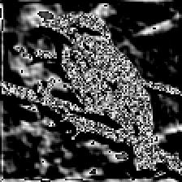


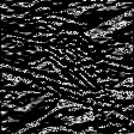
block2_conv2 (size 224 \times 224 \times 64)
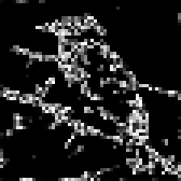

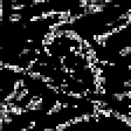
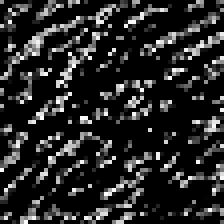


block3_conv3 (size 224 \times 224 \times 64)
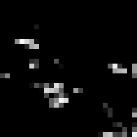


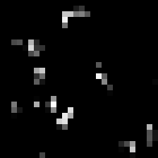
block4_conv3 (size 224 \times 224 \times 64)

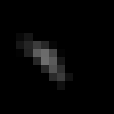

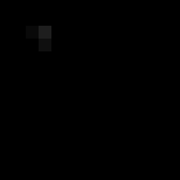

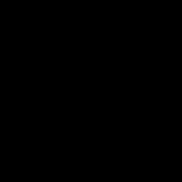
block5_conv3 (size 224 \times 224 \times 64)
As can be seen, the output of the filters become more and more sparse, that is, for the last layer, most of entries are filled with zeros and only a few features show a high response. This is promising as it helps classification if there is a clear separation between each of the features. In this case, the third filter in the last row seem to pick up the bird’s head and eyes.
6.7 Visualisation
Understanding each of the inner operations of a trained network is still an open problem. Thankfully Convolutional Neural Nets focus on images and a few visualisation techniques have been proposed.
6.7.1 Retrieving images that maximise a neuron activation
The simplest technique is perhaps to take an entire dataset and retrieve the images that have maximum response for the particular filter of interest. Recall that the output of ReLU and sigmoid is always positive and that a positive activation means that the filter has detected something. Thus finding the image that maximises the response from that filter will give a good indication about the nature of that filter.
Below is an example shown in Rich feature hierarchies for accurate object detection and semantic segmentation by Ross Girshick et al.:
A subtle point that must be kept in mind is that convolution layers produce a basis of filters, that are linearly combined afterwards. This means that each filter is not necessarily semantic by itself, it is better to think of them as basis functions. This means that these exemplars are not necessarily semantically meaningful in isolation. Instead, they typically show different types of textural patterns. This is perhaps more evident when looking at the other possible visualisation technique presented below.
6.7.2 Engineering Examplars
Another visualisation technique is to engineer an input image that maximises the activation for a specific filter (see this paper by Simonyan et al. and this Keras blog post).
The optimisation proceeds as follows:
- Define the loss function as the mean value of the activation for that filter.
- Use backpropagation to compute the gradient of the loss function w.r.t. the input image.
- Update the input image using a gradient ascent approach, so as to maximise the loss function. Go back to 2.
A few examples of optimised input images for VGG16 are presented below (see here):
As can be seen, the visual features picked up by the first layers are very low-level (eg. edges, corners), but as the process goes deeper, the features pick up much more complex texture patterns.
A classifier would linearly combine the responses to these filters to produce the logits for each class.
6.8 Takeaways
Convolutional Neural Nets offer a very effective simplification over Dense Nets when dealing with images. By interleaving pooling and convolutional layers, it is possible to reduce both the number of weights and the number of units.
The successes in Convnet applications (eg. image classification) were key to start the deep learning/AI revolution.
The mathematics behind convolutional filters were nothing new and have long been understood. What convnets have brought, is a framework to systematically train optimal filters and combine them to produce powerful high level visual features.
6.9 Useful Resources
- Chapter 9 from Deep Learning (MIT press) from Ian Goodfellow et al.
- Brandon Rohrer YouTube channel,
- Stanford CS class CS231n
- Michael Nielsen’s webpage